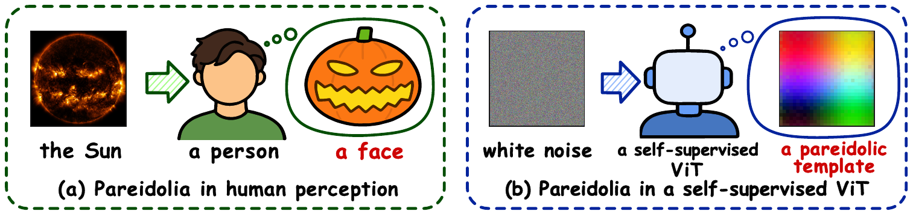
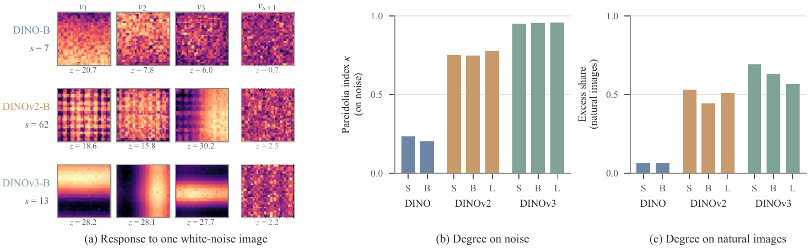
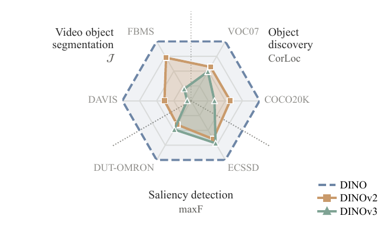
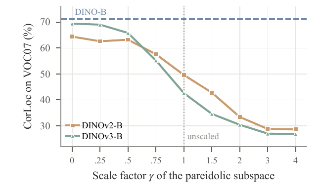
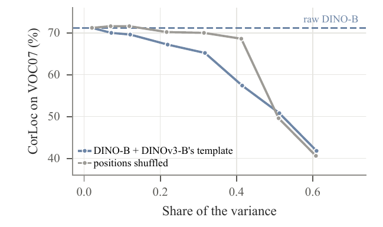
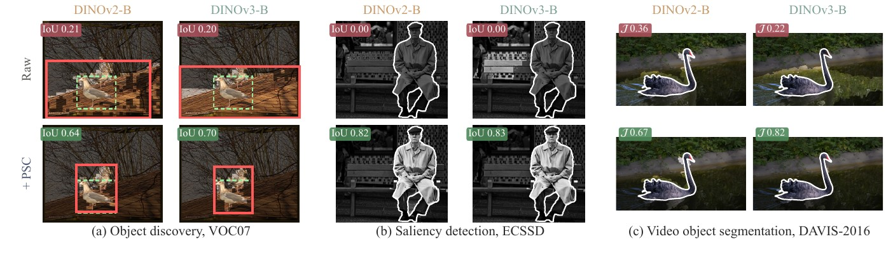
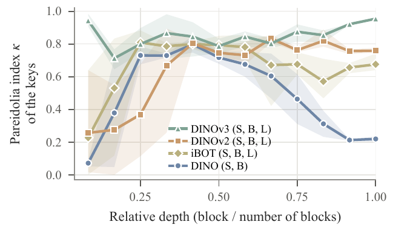
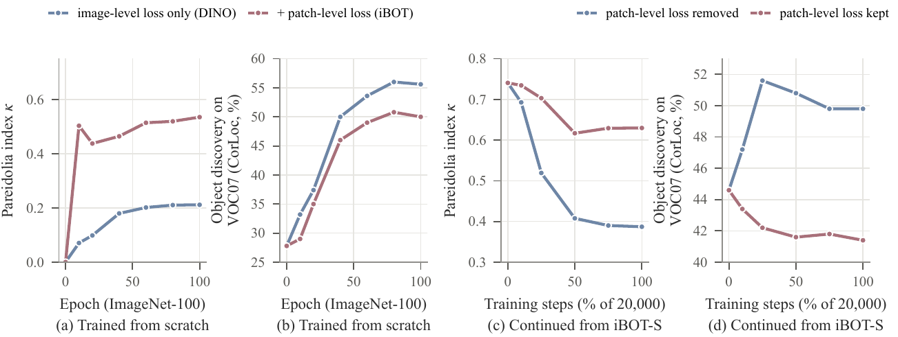

In human perception, pareidolia is the tendency to perceive a meaningful pattern, such as a face, in a random or ambiguous stimulus. We find a similar phenomenon in modern self-supervised Vision Transformers (ViTs): on white noise, which contains neither objects nor spatial structure, a few directions of their features still form spatially coherent patterns across the patches, imposed by the features themselves. We call this behavior pareidolia, and the span of these directions the pareidolic subspace. On natural images, it holds most of the feature variance in DINOv2 and DINOv3 but little in DINO. This excess explains why DINOv2 and DINOv3, despite stronger dense features, fall far behind DINO in object emergence, the hallmark ability of self-supervised ViTs to identify the patches of an object on their own. Our experiments further show that scaling down their pareidolic subspaces steadily restores their ability to discover objects, so their object emergence is hindered rather than lost. These findings naturally lead to a training-free calibration: Pareidolic Subspace Calibration (PSC) measures the pareidolic subspace only on a noise input and then calibrates the features of natural inputs by scaling its directions down to the variance level of the remaining directions. Across diverse object emergence tasks, PSC improves DINOv2 and DINOv3 by up to 31.7 CorLoc on object discovery, 30.2 maxF on saliency detection and 59.9 𝒥 on video object segmentation. To identify the cause of pareidolia, we trace it block by block and find that it forms in the middle blocks of every self-supervised model we examine but stays strong to the last block only in models trained with a patch-level loss; controlled training confirms that an image-level loss alone lets it fade.
Pareidolia is the tendency to perceive a meaningful pattern, such as a face, in a random or ambiguous stimulus, like the jack-o’-lantern face that people perceive in an image of the Sun (Fig. 1a). In human perception, pareidolia arises when learned expectations dominate weak or ambiguous input, and it is studied with pure noise, where the input offers no evidence at all: observers shown pure noise report faces and letters, and averaging the noise images that triggered their reports recovers the internal representation behind them, which psychophysics models as a template that the observer matches against the input.
We run the same test on modern self-supervised Vision Transformers (ViTs) and find a similar phenomenon (Fig. 1b). White noise contains neither objects nor spatial structure, so the features it produces should have no spatial structure either. Yet the leading directions of their features form spatially coherent patterns across the patches, such as smooth waves across the image (Fig. 2a): a template that the features impose, as human observers impose theirs on noise. We therefore call this behavior pareidolia, and the span of these directions the pareidolic subspace. This pareidolia varies in degree: it is faint in DINO and strong in its successors, DINOv2 and DINOv3 (Fig. 2b). We study the DINO lineage, in which object emergence was first observed, and find pareidolia in other self-supervised ViTs as well.


This excess matters for object emergence, the hallmark ability of self-supervised ViTs to identify the patches of an object on their own. Object emergence is revealed by grouping patches according to the cosine similarity of their final-layer keys, the very features in which we find pareidolia, and it is tested by three standard tasks: unsupervised object discovery, saliency detection and video object segmentation. When the pareidolic subspace holds most of the variance, it dominates these similarities, so patches are grouped by the pareidolic pattern rather than by the objects they belong to. Accordingly, DINOv2 and DINOv3, despite stronger dense features and large gains on dense tasks solved by trained heads, fall far behind DINO in object emergence across diverse tasks (Fig. 3).
To examine how the pareidolic subspace affects object emergence, we rescale it in DINOv2 and DINOv3: scaling it down steadily restores their object discovery, and scaling it up degrades it further (Fig. 4).
The template alone reproduces the failure. We take DINOv3-B’s template, its noise response within the pareidolic subspace, resample it to the patch grid of each image, and add it to the final keys of DINO-B at a prescribed share of their variance (Fig. 5). As the injected share grows, DINO-B’s object discovery falls, and at a share close to DINOv3-B, it drops to the level of DINOv3-B itself: the template alone reproduces DINOv3’s failure in a model whose objects are intact. At this share, the injection with shuffled positions harms as much, thus what decides the damage is how much of the variance the pareidolic subspace takes, not the pattern it draws.


These findings naturally lead to a training-free calibration: since the pareidolic subspace is a property of the model and appears without any image content, its directions and their excess variance can be estimated from the response to noise alone. We propose Pareidolic Subspace Calibration (PSC), which measures the pareidolic subspace only on a noise input and then calibrates the features of natural inputs by scaling its directions down to the variance level of the remaining directions, without training or labels.
We evaluate PSC on the six DINOv2 and DINOv3 models, all frozen, and follow the TokenCut protocol of each task. For each model, the pareidolic subspace and its calibration scales are computed once from a single noise image and applied unchanged to every image of every dataset; for video, the noise image has the frame size.
PSC improves every DINOv2 and DINOv3 model on all nine datasets and all metrics (Tabs. 1 to 3), with the largest gains in video object segmentation, where the raw DINOv3 models fail most. Fig. 6 shows the three tasks on individual images: the raw keys of DINOv2-B and DINOv3-B miss the object, and the calibrated keys return it.
| Model | ECSSD | DUTS-TE | DUT-OMRON | ||||||
|---|---|---|---|---|---|---|---|---|---|
| maxF | IoU | Acc | maxF | IoU | Acc | maxF | IoU | Acc | |
| DINOv2-S/14 | 57.2 | 52.1 | 74.5 | 46.5 | 39.6 | 74.6 | 32.9 | 28.5 | 67.3 |
| + PSC | 79.4+22.2 | 72.0+19.9 | 89.3+14.8 | 73.6+27.1 | 62.2+22.6 | 90.4+15.8 | 63.1+30.2 | 56.2+27.7 | 85.7+18.4 |
| DINOv2-B/14 | 66.4 | 60.2 | 79.8 | 49.8 | 42.1 | 76.3 | 38.4 | 32.2 | 69.6 |
| + PSC | 81.2+14.8 | 73.8+13.6 | 89.7+9.9 | 73.4+23.6 | 62.2+20.1 | 89.7+13.4 | 62.5+24.1 | 55.4+23.2 | 85.2+15.6 |
| DINOv2-L/14 | 64.7 | 58.3 | 80.9 | 49.7 | 41.5 | 79.1 | 35.7 | 28.8 | 71.7 |
| + PSC | 81.3+16.6 | 73.4+15.1 | 90.1+9.2 | 71.8+22.1 | 60.7+19.2 | 89.3+10.2 | 60.8+25.1 | 53.6+24.8 | 85.2+13.5 |
| DINOv3-S/16 | 65.4 | 54.1 | 79.9 | 52.7 | 38.4 | 76.6 | 41.0 | 28.0 | 67.6 |
| + PSC | 77.8+12.4 | 70.7+16.6 | 89.1+9.2 | 67.0+14.3 | 55.9+17.5 | 88.3+11.7 | 57.9+16.9 | 51.9+23.9 | 84.5+16.9 |
| DINOv3-B/16 | 68.1 | 61.2 | 82.0 | 55.3 | 46.4 | 79.2 | 37.8 | 31.0 | 68.2 |
| + PSC | 81.9+13.8 | 74.7+13.5 | 90.3+8.3 | 72.2+16.9 | 60.6+14.2 | 89.5+10.3 | 61.8+24.0 | 55.3+24.3 | 85.5+17.3 |
| DINOv3-L/16 | 69.2 | 58.3 | 82.7 | 54.9 | 40.8 | 78.5 | 41.6 | 29.5 | 68.9 |
| + PSC | 73.0+3.8 | 62.4+4.1 | 87.9+5.2 | 64.1+9.2 | 51.1+10.3 | 88.4+9.9 | 48.9+7.3 | 42.1+12.6 | 83.8+14.9 |
| Model | VOC07 | VOC12 | COCO20K |
|---|---|---|---|
| DINOv2-S/14 | 40.7 | 45.9 | 36.4 |
| + PSC | 63.4+22.7 | 68.5+22.6 | 54.3+17.9 |
| DINOv2-B/14 | 47.7 | 53.8 | 40.4 |
| + PSC | 65.4+17.7 | 69.7+15.9 | 55.6+15.2 |
| DINOv2-L/14 | 46.4 | 51.7 | 38.8 |
| + PSC | 65.5+19.1 | 70.2+18.5 | 57.2+18.4 |
| DINOv3-S/16 | 39.6 | 46.0 | 29.0 |
| + PSC | 65.4+25.8 | 70.6+24.6 | 54.2+25.2 |
| DINOv3-B/16 | 42.5 | 47.5 | 27.0 |
| + PSC | 68.1+25.6 | 73.4+25.9 | 58.7+31.7 |
| DINOv3-L/16 | 39.9 | 45.7 | 27.2 |
| + PSC | 63.2+23.3 | 66.2+20.5 | 54.5+27.3 |
| Model | DAVIS-2016 | FBMS | SegTrackv2 |
|---|---|---|---|
| DINOv2-S/14 | 23.7 | 35.5 | 31.1 |
| + PSC | 69.6+45.9 | 75.5+40.0 | 71.4+40.3 |
| DINOv2-B/14 | 43.7 | 59.0 | 62.2 |
| + PSC | 71.1+27.4 | 76.7+17.7 | 71.1+8.9 |
| DINOv2-L/14 | 51.8 | 59.3 | 56.4 |
| + PSC | 72.1+20.3 | 71.9+12.6 | 71.1+14.7 |
| DINOv3-S/16 | 15.6 | 19.2 | 10.6 |
| + PSC | 71.4+55.8 | 72.4+53.2 | 68.5+57.9 |
| DINOv3-B/16 | 22.9 | 27.5 | 20.2 |
| + PSC | 77.0+54.1 | 73.5+46.0 | 71.4+51.2 |
| DINOv3-L/16 | 18.6 | 24.1 | 15.8 |
| + PSC | 78.5+59.9 | 65.8+41.7 | 67.3+51.5 |


To further investigate what makes a model pareidolic, we trace its pareidolia index block by block, which measures how much of the noise response recurs across noise images. The trace reveals that all the ViTs we examine are strongly pareidolic in their early and middle blocks. In the last blocks, DINO becomes far less pareidolic, whereas the models that add a patch-level loss to its recipe remain strongly pareidolic.
iBOT shares DINO’s data, architecture, crops and [CLS] loss and adds one ingredient, masked patch prediction, the patch-level loss that DINOv2 and DINOv3 also use.
Generality. We further extend the analysis to 24 self-supervised models from 11 families and find that the split between the two losses remains consistent at the last block: every model trained with a patch-level loss, such as MAE, I-JEPA or data2vec, is far more pareidolic than every model trained with an image-level loss alone, such as MoCo v3 or MSN.
Controlled training confirms that the loss decides: trained from scratch with the same data, architecture and schedule, a ViT remains strongly pareidolic to its last block under iBOT’s patch-level loss but becomes far less pareidolic under DINO’s image-level loss alone, and removing the patch-level loss from a trained iBOT has the same effect.

This matches how pareidolia arises in human perception, where what is perceived combines expectations with sensory evidence and pareidolia appears when the expectations outweigh weak evidence. A patch-level loss rewards such expectations: from the visible context, the model must predict the features of masked patches whose content its input does not contain, so it learns strong expectations about patch content, which then surface even on noise. DINO’s image-level loss acts only on the [CLS] token, asking the outputs for different crops of the same image to agree, so the patch features receive no target of their own and are never trained to fill in content that is absent.
@article{lin2026modern,
title = {Modern Self-Supervised Vision Transformers Are Pareidolic},
author = {Lin, Zihang and Qin, Huaiyuan and Zhen, Liangli and Guo, Qing and
Liu, Jun and Ong, Yew Soon and Zhu, Hongyuan},
journal = {arXiv preprint arXiv:2611.31238},
year = {2026}
}This page is adapted from the ECHO project page, itself built on the Nerfies template.